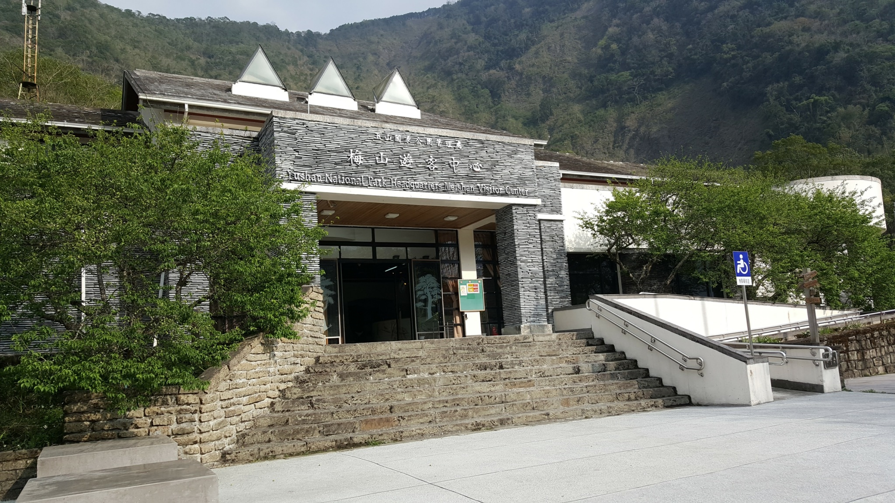

秋冬旅遊補助
9-12月最高省2000
桃源-梅山
梅山里位於桃源區的最北端山區，也是南横公路進入玉山國家公園管理區的門戶。梅山里佔地廣大居民稀少，以布農族為主，多以務農為生。玉山公園管理處在這裡設有南區梅山遊客中心，是南橫公路上唯一的服務站，提供遊客餐飲、休憩與解說服務，遊客中心以布農族的石板構築，與週遭景緻十分協調融合。旁邊還有一座布農文物展示中心，讓遊客在欣賞之餘，對布農文化有更深的瞭解，遊客中心前方還有一座以原生植物為主的生態園及步道，使遊客對臺灣自然生態有更深入認識。梅山附近有二座吊橋、多條步道及天池、檜谷、梅蘭林道等天然景緻，沿途擁有豐富動植物生態與遼闊的視野，在壯麗的群山中健行、賞鳥或觀賞雲海於山谷間奔騰是人生至高享受，而每年冬天的梅花季節，滿山遍野盛開的梅花如同雪海，浪漫清香更是有如置身人間仙境，讓人流連忘返。
相關資訊
電話
07-686-6181
地址
848高雄市桃源區梅山村三鄰梅山巷44-5號
開放時間
08:30–17:00
票價資訊
免費